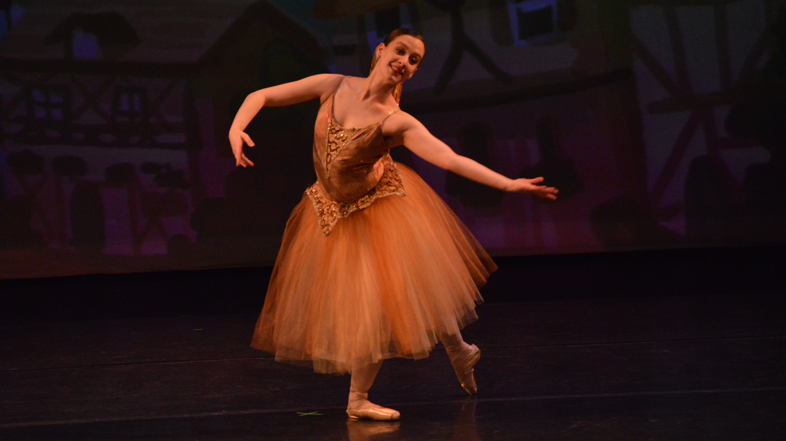

Columbia University Ballet Ensemble, or, as we endearingly call it, CUBE, fills the classical ballet niche in the university's dance community. Each semester, CUBE gives ballet dancers of all level on campus the opportunity to learn, rehearse, and perform classical and dramatic roles, producing a work based on one story ballet in a fun and challenging, yet supportive environment.
CUBE is currently working on its spring production: Coppélia!
Sponsored in part by the Arts Initiative at Columbia University. This funding is made possible through a generous gift from The Gatsby Charitable Foundation.
